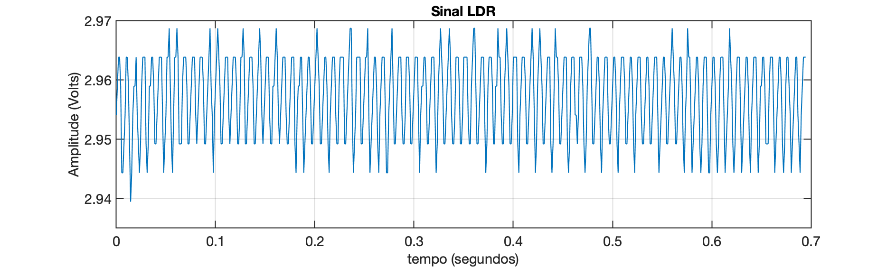
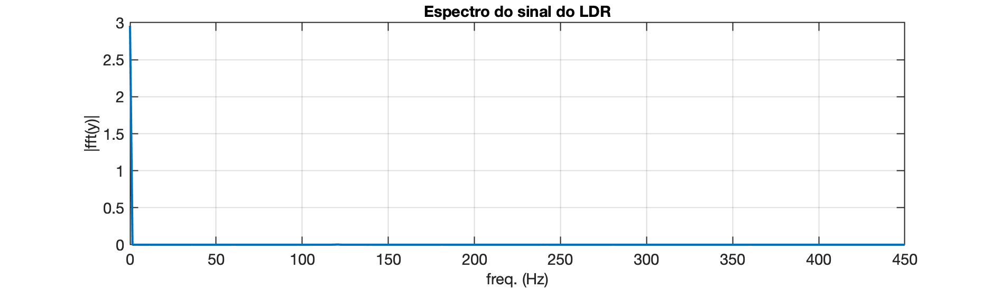
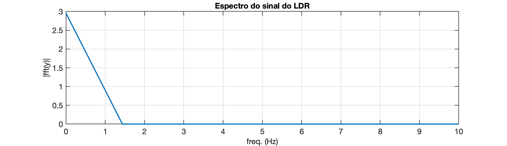
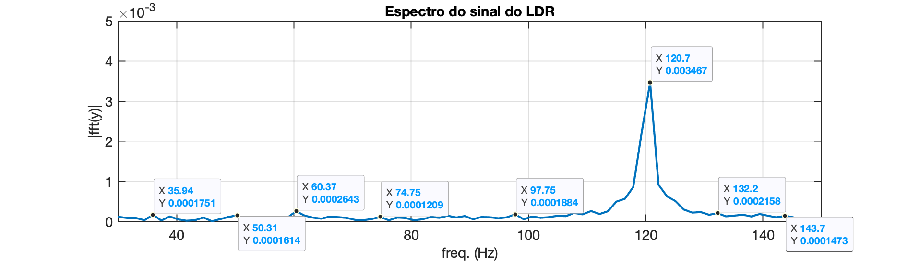
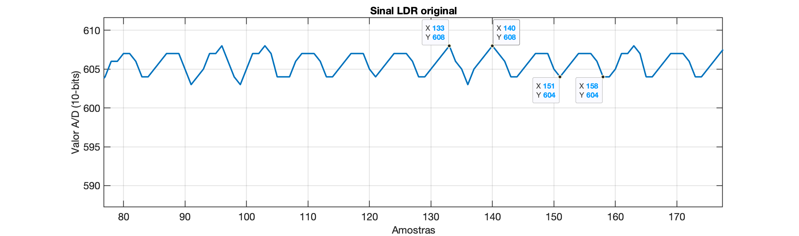

A idéia é exportar os dados capturados através do Arduíno e enviados pela porta serial do PC num arquivo texto para posterior análise (leitura e visualizações) usando o Matlab.
Primeiramente vamos usar um simples código em Python capaz de ler dados de uma porta serial, 2 colunas de dados "float" (4 casas decimais) e gravar estes dados num arquivo texto, seguindo o mesmo formato (uma cópia), até que o usuário digite uma tecla e isto provoque o fim da captura de dados e fechamento do arquivo texto com os dados capturados.
Para ler dados de uma porta serial e gravar esses dados em um arquivo texto, você pode usar a biblioteca pyserial para a comunicação serial. Aqui está um exemplo de como você pode fazer isso:
Primeiro, certifique-se de que você tem a biblioteca pyserial instalada. Você pode instalá-la usando o seguinte comando:
xxxxxxxxxxpip install pyserialAqui está o código Python para ler os dados da porta serial e gravar em um arquivo texto até que o usuário pressione uma tecla:
Código: capture_serial_data.py
xxxxxxxxxximport serialimport threadingimport os# Configurações da porta serialporta_serial = '/dev/cu.usbmodem14201' # Substitua pelo nome da porta serial correta no seu conputador (este código fio executado no macOS)taxa_baude = 115200 #9600# Função para parar a captura quando uma tecla for pressionadadef espera_tecla(): input("Pressione Enter para parar a captura de dados...\n") global capturando capturando = False# Função principal para ler da porta serial e escrever no arquivodef captura_dados(): try: with serial.Serial(porta_serial, taxa_baude, timeout=1) as ser: with open('dados_capturados_LDR.txt', 'w') as arquivo: while capturando: linha = ser.readline().decode('utf-8').strip() if linha: print(linha) arquivo.write(linha + '\n') except serial.SerialException as e: print(f"Erro ao acessar a porta serial: {e}") except OSError as e: print(f"Erro ao abrir o arquivo: {e}")# Variável global para controlar a capturacapturando = True# Inicia a captura de dados em uma thread separadathread_captura = threading.Thread(target=captura_dados)thread_captura.start()# Espera o usuário pressionar uma tecla para parar a capturaespera_tecla()# Aguarda a thread de captura finalizarthread_captura.join()print("Captura de dados finalizada.")Importações e Configurações:
serial para comunicação serial, threading para gerenciamento de threads e os para manipulações do sistema operacional.porta_serial) e a taxa de baude (taxa_baude).Função espera_tecla:
capturando como False, o que irá parar a captura de dados.Função captura_dados:
capturando seja definido como False.Controle da Captura:
capturando para controlar o loop de captura.espera_tecla para esperar a entrada do usuário.join().Para executar este código:
dados_capturados.txt.Este código deve funcionar no macOS e também em outras plataformas, desde que a biblioteca pyserial esteja instalada e configurada corretamente.
Teste:
Executando:
xxxxxxxxxx% python capture_serial_data.pyMemória livre disponível (bytes): 1498Número máximo de leituras possíveis: 749Vamos tentar realizar: 674 leiturasIniciando a captura de dados...Tempo de início (ms): 7Tempo de término (ms): 756Tempo total (ms): 749Período de amostragem (ms): 1.1113Leituras capturadas:444529558575583589:603605606607607607Captura concluída.Arquivo exemplo gerado: dados_capturados_LDR.txt:
xxxxxxxxxxFiltro média móvel 10 amostrasMemória livre disponível (bytes): 1498Número máximo de leituras possíveis: 749Vamos tentar realizar: 674 leiturasIniciando a captura de dados...Tempo de início (ms): 7Tempo de término (ms): 756Tempo total (ms): 749Período de amostragem (ms): 1.1113Leituras capturadas:444529558575583589:603605606607607607Captura concluída.
Obs.: Note que foi criado um programa em C para o Arduíno ( captura_dados_delay_1ms.ino ) para capturar dados do seu conversor A/D à taxa de 1 ms (sem usar ISR). Isto é, o código aloca dinamicamente a maior quantidade de memória disponível para um vetor onde os dados amostrados serão temporariamente armazenados. Este código mostra o instante inicial em que foi iniciada e finalizada a captura de dados, e assim é possível determinar a taxa de amostragem atingida. Depois que a captura de dados é finaliza, os dados armazenados neste vetor e outras informações relevantes são exportadas pela porta serial. Considerar que enviar dados pela porta serial pode consumir mais tempo que o menor período de amostragem que poderia ser obtido usando o Arduíno.
Recordando de Usando função fft do Matlab...
O arquivo gerado anteriormente (dados_capturados_LDR.txt) pode ser editado (num editor de textos comum) para ficar apenas com 2 colunas numéricas separadas por espaço em branco. O Matlab pode ser usado para ler este arquivo usando o comando:
xxxxxxxxxx>> x=load('dados_LDR_1ms.txt');Supondo que neste caso, foi criado um novo arquivo chamado: dados_LDR_1ms.txt. O comando anterior lê os dados do arquivo para o vetor . Este arquivo contêm os dados apenas do sinal bruto, sem nenhum escalonamento (valores inteiros variando entre 0 à 1023 já que o A/D do Arduíno é de 10-bits). Este arquivo em particular contêm 674 amostras que em teoria foram capturados à uma taxa de 1 ms (1 KHz). Gastou-se 749 mili-segundos para gerar estes dados, o que significa que o código usado no Arduíno para captura destes dados, não trabalhou na taxa desejada de 1 mili-segundo entre amostras, mas sim:
segundos ou, Hz.
A figura abaixo mostra o resultado temporal desta amostra de dados:

Obs.: O sinal brutro (variando entre 0 à 1024) foi re-escalonado para a faixa de 0 à 5 Volts.
Enfim, considerando-se esta taxa de amostragem, ignorando algumas amostras iniciais (x=x(49:length(x));), resultando em 626 pontos amostrados, foi obtido o seguinte espectro deste sinal:

Nota-se o componente DC de Volts (conforme esperado) e outros componentes menores até a faixa dos 1,5 Hz:

xxxxxxxxxx>> % Separando os 10 maiores picos da FFT>> [Maiores,Index]=sort(P1,'descend');>> [f(1,Index(1:10))' P1(Index(1:10))] ans = 0 2.9572 120.75 0.003467 119.31 0.0022281 122.19 0.0009229 240.06 0.00086962 117.87 0.00086652 123.62 0.00063583 116.44 0.00057221 125.06 0.00051692 115 0.00050425>> % Freq(Hz) Pico(Volts)Percebe-se um pico de 3,467 mV de pico ocorrendo em 120,75 Hz e outros próximos desta frequência:

Porém note que este pico em 120 Hz é de apenas 3,5 mV, uma amplitude muito baixa se comparado com o nível CD do sinal (frequência zero) de aproximadamente 3,0 Volts; (ou dB).
Note ainda que a "resolução" (passo) frequencial do gráfico espectral está em: Hz.
Uma análise mais "visual" do sinal no domínio tempo parece revelar um "ripple" de 14,648 mV de pico ocorrendo na frequência aproximada de 128,55 Hz, ou a cada 7 amostras aproximadamente:

xxxxxxxxxx>> 608-602 % instantes de amostragemans = 6>> 6*5/1024ans = 0.029297>> ans/2ans = 0.014648>> delta_k=140-133delta_k = 7>> delta_k=158-151delta_k = 7>> f_ripple=1/(7*T)>> f_ripple = 128.55O que significa que eventualmente um filtro de média móvel de 7 ou 8 passos seria suficiente para filtrar o componente oscilatório presente neste sinal.
🌊 Fernando Passold 📬 ,